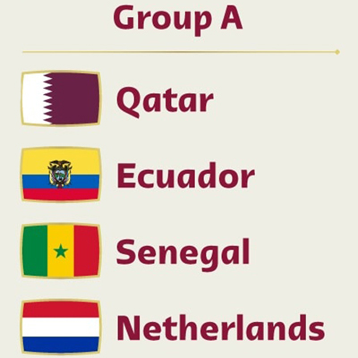
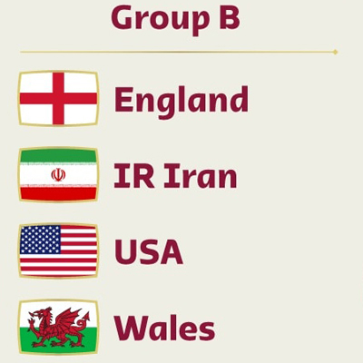
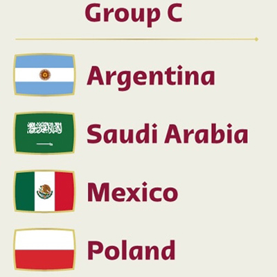
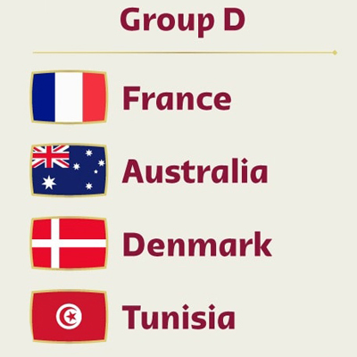
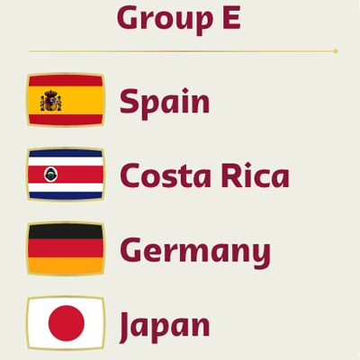
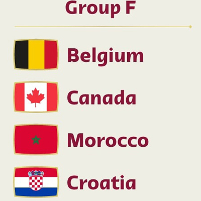
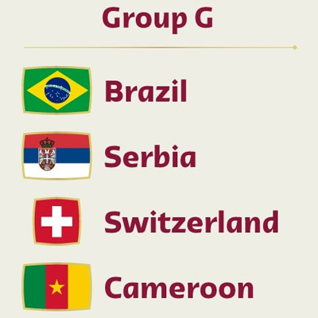
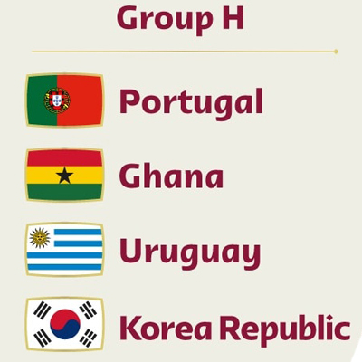

world cup 2022
World Cup 2022
Tickets
More
Teams
Stadium
Contact
Teams
Home
/
Teams
Teams Groups

Group A
Qatar Best Players
Ecuador Best Players
Senegal Best Players
Netherlands Best Players

Group B
England Best Players
IR Iran Best Players
USA Best Players
Wales Best Players

Group C
Argentina Best Players
Saudi Arabia Best Players
Mexico Best Players
Poland Best Players

Group D
France Best Players
Australia Best Players
Denmark Best Players
Tunisia Best Players

Group E
Spain Best Players
Costa Rica Best Players
Germany Best Players
Japan Best Players

Group F
Belgium Best Players
Canada Best Players
Morocco Best Players
Croatia Best Players

Group G
Brazil Best Players
Serbia Best Players
Switzerland Best Players
Cameroon Best Players

Group H
Portugal Best Players
Ghana Best Players
Uruguay Best Players
Korea Republic Best Players